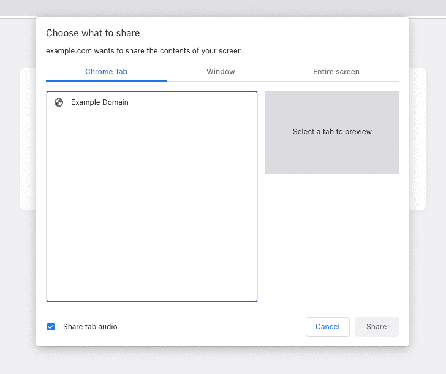

01 / macOS
Apple Silicon 首次開啟
適用 Apple M 系列及 macOS 13.5 或以上。油字幕以 ad-hoc 簽署，尚未經 Apple 公證。Gatekeeper 可能在首次開啟時攔截。
1解壓 ZIP，移到「應用程式」
在 Finder 雙擊下載的 ZIP。將解壓後的
V-Translate.app拖到「應用程式」（Applications），然後雙擊開啟一次。示意圖 · Finder 2若被攔截，先關閉提示
如果 macOS 提示無法驗證開發者或無法檢查是否含有惡意軟件，關閉這個提示。下一步到「系統設定」處理。
示意圖 · Gatekeeper 提示 3在「私隱與保安」找「仍要開啟」
開啟「系統設定」（System Settings），到「私隱與保安」或「隱私權與安全性」（Privacy & Security），向下捲到安全性，按油字幕旁的「仍要開啟」（Open Anyway）。
示意圖 · Privacy & Security 4確認開啟油字幕
確認提示上的程式名稱是
V-Translate，按「開啟」或「仍要開啟」。如系統要求，使用登入密碼或 Touch ID 確認。示意圖 · 開啟確認
看 Apple 官方截圖 ·「仍要開啟」的位置

找不到「仍要開啟」時，先重新嘗試開啟油字幕，再回到設定找該選項。Apple 說明這個按鈕會在嘗試開啟後保留約一小時。 Apple 官方 Gatekeeper 教學 · 開啟例外的有效時間
01B / macOS · Capture permission
允許擷取螢幕與聲音
如果 macOS 詢問錄製權限，或油字幕選不到直播分頁，請授權實際開啟播放器的 Chrome 或 Edge。設好權限後，仍要在瀏覽器的分享視窗勾選分頁音訊。
-
1開啟「螢幕與系統錄音」
按蘋果選單 →「系統設定」→「私隱與保安」→「螢幕與系統錄音」（Screen & System Audio Recording）。較舊的 macOS 可能只顯示「螢幕錄製」（Screen Recording）。
示意圖 · 權限位於「私隱與保安」 -
2打開 Chrome 或 Edge 的開關
在可擷取螢幕及聲音的清單打開瀏覽器旁的開關。找不到瀏覽器時，按清單下方的 ＋，從「應用程式」加入 Chrome 或 Edge。
示意圖 · 開啟實際使用的瀏覽器 看實際 Mac 設定畫面

畫面來源為亞利桑那大學教學支援。 看原圖及說明 -
3完全結束瀏覽器，再開一次
若系統提供「結束並重新開啟」，按該按鈕。也可以在瀏覽器按 ⌘ Q，再開 Chrome 或 Edge。若油字幕播放器也關了，重新開啟油字幕。
示意圖 · 完全結束並重開瀏覽器 -
4選直播分頁，勾選音訊
讓直播和播放器在同一個瀏覽器開啟。回到油字幕按「選擇直播分頁」，選擷取模式，再在瀏覽器選直播分頁、勾選 分享分頁音訊，按「分享」。

真實 Chrome 截圖。先選上方 Chrome Tab，再核對左下角 Share tab audio。 Chrome for Developers · CC BY 4.0
若畫面有動但沒聲音，先確認直播本身有聲音，再重選「分頁」並勾選分頁音訊。 Apple 官方權限說明 · Google 的 macOS 權限提示
02 / Windows
SmartScreen 首次開啟
適用 Windows 10／11 x64。Windows 可能在程式的信譽資料不足時顯示 Microsoft Defender SmartScreen 警告。
1先「解壓縮全部」
在檔案總管右擊 ZIP，選「解壓縮全部」（Extract All）。進入解壓後的資料夾，保留
V-Translate.exe與whisper-vulkan.zip在一起。示意圖 · 檔案總管 2開啟
V-Translate.exe在解壓後的資料夾雙擊程式。如果直接開啟播放器，可跳到首次設定。
示意圖 · 已解壓的資料夾 3遇到保護畫面，按「其他資訊」
若出現「Windows 已保護您的電腦」（Windows protected your PC），在核對來源後按「其他資訊」（More info），查看被攔截的檔案名稱。
示意圖 · SmartScreen 4核對程式名稱後，按「仍要執行」
確認檔案是
V-Translate.exe。若頁面提供「仍要執行」（Run anyway）而你已核對來源，可以按該按鈕。受管理的電腦或部分保護設定可能不提供這個選項。示意圖 · SmartScreen 應用程式詳細資訊
如按鈕不出現，請查明是 SmartScreen、Smart App Control 還是管理員政策。 Microsoft 的 SmartScreen 按鈕示例 · Windows 保護設定
03 / Troubleshooting
開啟後仍有問題
- 播放器沒有打開
- 先確認已安裝 Chrome 或 Edge。若舊版仍在背景執行，先在舊版按「關閉背景聽寫程式（Whisper）」，再開新版。
- 模型尚未準備好
- 首次使用請選語言和效能，保持網絡連線，等模型準備完成再擷取。如果畫面顯示失敗，先核對網絡和可用空間，再按「準備 AI 模型」。
- 有畫面，沒有字幕或聲音
- 在 Chrome／Edge 分享視窗選「分頁」，並勾選分享分頁音訊。Mac 如要求錄製權限，請跟 螢幕與聲音擷取圖解 授權及重開瀏覽器。
- Windows 顯示缺少 DLL
- 若畫面指出缺少 Visual C++ 執行元件，可從 Microsoft 下載 x64 版。 Microsoft Visual C++ Redistributable
04 / Captions
下載 .srt 字幕
時間從本次擷取開始計算。每段會先放譯文，再放原文。只有原文的段落也會保留。
- 開始擷取，等第一段定稿字幕出現。
- 切到「字幕紀錄」（Caption history）。
- 按「匯出 .srt」。較舊版本顯示「匯出字幕」。瀏覽器會下載
V-Translate-日期時間.srt。結束擷取後也可以匯出，開下一次擷取前先儲存上一次的字幕。
English / Quick steps
Install and troubleshoot
- Before opening
- Download from the official site or its GitHub Release and check the matching SHA-256. Stop if the OS reports malware, a damaged file, or a managed-device block.
- macOS Gatekeeper
- Unzip and move V-Translate.app to Applications. Try opening it once. If blocked, dismiss the warning, then go to System Settings → Privacy & Security → Open Anyway. Confirm the app name and choose Open or Open Anyway. The Apple Silicon build is ad-hoc signed and has not been notarized. Illustrated steps
- Windows SmartScreen
- Extract all files and open V-Translate.exe. If Windows protected your PC appears, check the file under More info. Choose Run anyway if available and you have verified the file. Illustrated steps
- Share tab audio on Mac
- If macOS prompts for permission, open System Settings → Privacy & Security → Screen & System Audio Recording. Enable Chrome or Edge, quit and relaunch it, then choose the live tab and enable Share tab audio. Illustrated steps and screenshots
- Export subtitles
- Once finalized captions appear, open Caption history and select Export .srt. Earlier releases label this button Export captions.